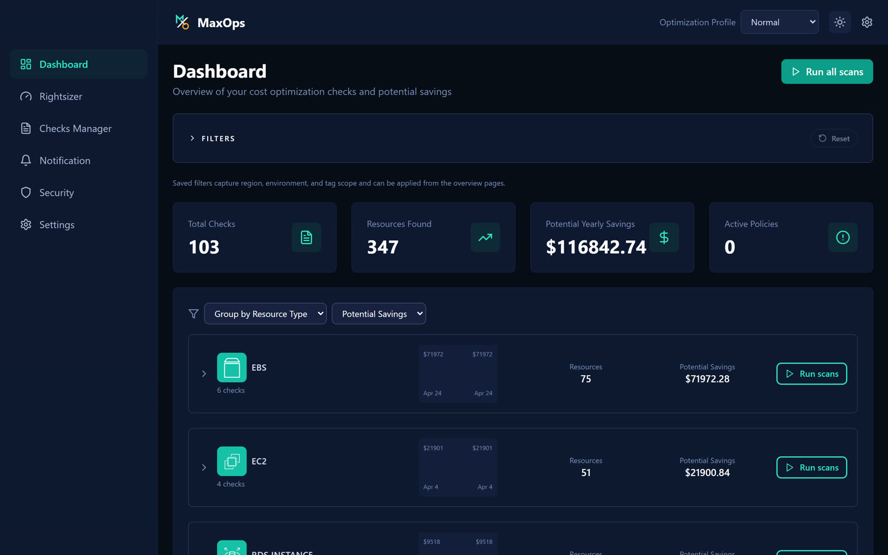

Reports do not show resource context
Cloud bills and dashboards can identify spend, but engineers still need instance type, state, region, tags, workload, and service-specific posture before they can act.
Open source FinOps control plane
Agent-ready Ask your own AI assistant about your cloud spendMaxOps gives cloud teams a local-first FinOps workflow for understanding infrastructure, finding waste, reviewing evidence, and acting with context without sending your cloud data to a hosted service.
It speaks the open Model Context Protocol, so the assistant your team already uses can answer from findings MaxOps computed and verified — not from guesses. 13 of 16 tools are read-only, and nothing is written until you switch it on.

The cloud infrastructure problem
Cloud bills and dashboards can identify spend, but engineers still need instance type, state, region, tags, workload, and service-specific posture before they can act.
Optimization work requires defensible checks, resource-level findings, current configuration, target action, and a way to exclude or snooze legitimate exceptions.
Teams move between dashboards, AWS Console, automation clients, and code. MaxOps keeps the same FinOps context available across those surfaces.
MaxOps workflow
MaxOps follows the practical FinOps lifecycle: understand what is running, identify waste with infrastructure checks, and run repeatable workflows with audit-friendly controls.
Inventory views combine resource identity, service metadata, workload signals, tags, estimated cost, finding status, and region/account context.
The backend check registry evaluates cloud waste patterns such as idle compute, unattached volumes, overprovisioned capacity, missing lifecycle policies, and old snapshots.
Snoozes, filters, check execution, action flows, and MCP write controls make optimization work explicit instead of hiding decisions in chat threads or spreadsheets.
Local-first by design
MaxOps is built to run locally: the backend, frontend, MCP server, and browser plugin work against your local MaxOps instance. Inventory, findings, tags, cost estimates, snoozes, and check results do not need to be sent to a third-party SaaS platform for the core workflow.
The API runs in your environment and serves the dashboard, resource pages, check workflows, and MCP endpoints from your own MaxOps data store.
The browser plugin is scoped to AWS Console pages and local HTTP origins such as localhost or 127.0.0.1.
Teams can inspect infrastructure cost signals, workload evidence, and optimization findings without uploading internal cloud inventory to an external service.
Infrastructure visibility
MaxOps is designed for progressive investigation. Start with the operating picture, drill into service families, then inspect the exact resource with the evidence needed to make a change.
Group checks and findings by resource type, account, region, tags, and saved filters to see where optimization work should start.
Dedicated overviews for EC2, EBS, S3, RDS, DynamoDB, and ElastiCache compare health, workload, dimensions, findings, and potential actions.
Detail pages expose configuration, tags, usage trends, MaxOps finding context, recommended action, cost estimate, and potential savings for the selected resource.
AWS Console context
The browser plugin overlays local MaxOps data inside AWS Console resource tables, adding cost, savings, and finding chips without calling third-party services.
MCP workflows
The MCP server runs against your local MaxOps backend and provides tools for resource types, checks, latest results, inventory queries, tag cost summaries, snoozes, and check execution when write mode is enabled.
OSS project stack
FastAPI backend that runs locally for inventory, check execution, policy management, optimization APIs, onboarding, settings, scans, pricing, and MCP-facing endpoints.
React + TypeScript operating console with dashboard, resource type overview pages, instance/resource detail pages, checks manager, notifications, security, settings, and onboarding.
Standalone MCP server that exposes inventory, checks, results, tag summaries, snooze workflows, and controlled write tools to desktop MCP clients.
Dependency-free browser extension for Chrome, Edge, and Firefox that reads local MaxOps data only and overlays it in AWS Console resource views.
AWS optimization coverage
Run it locally
Use the repository setup guide to run the backend, frontend, MCP server, and browser plugin locally. Keep your infrastructure data private while extending checks and workflows around your own FinOps operating model.